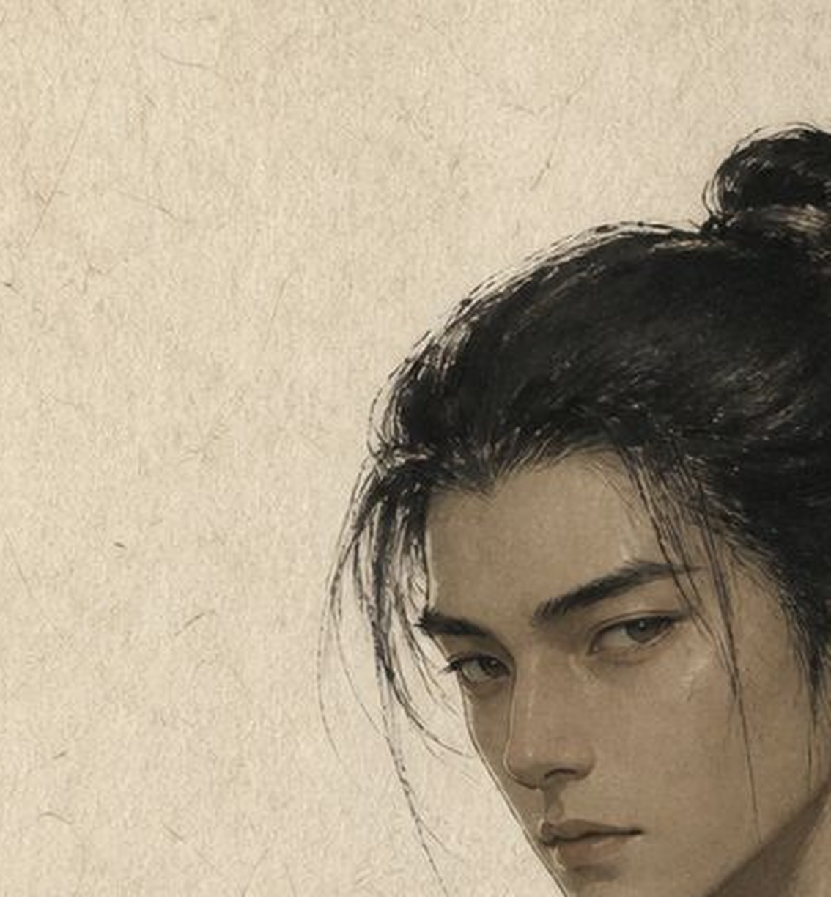
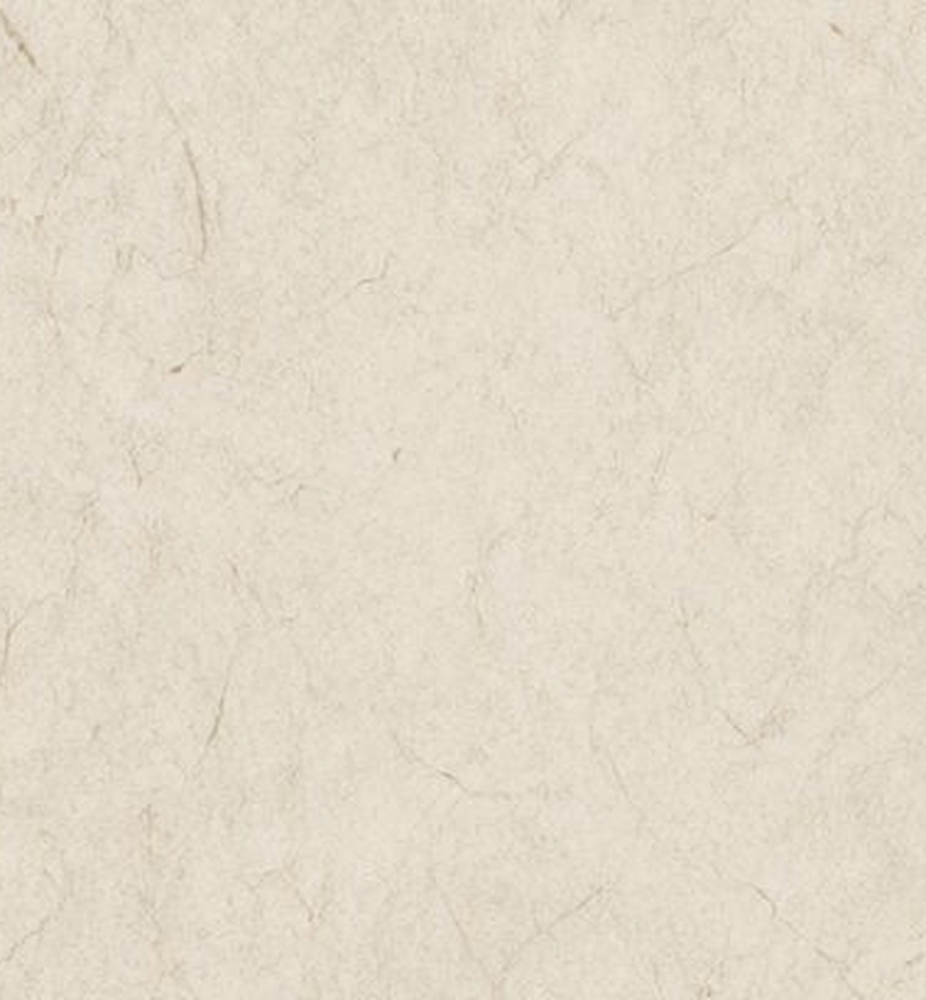
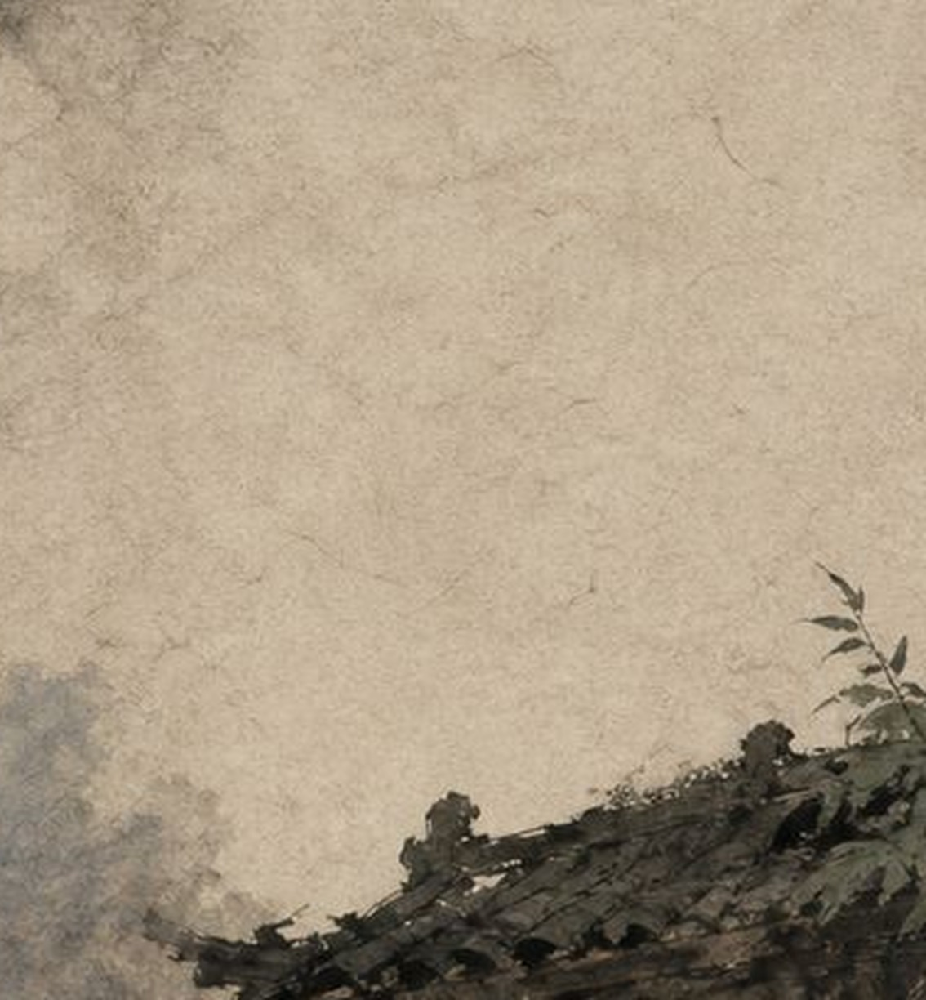

Báo cáo cho anh · 17/11/2026 · nhánh main
Em đo độ "gãy khúc" của nét mực: đếm chu vi mảng mực thô, rồi làm trơn hình học và đếm lại. Nét liền thì hai số sát nhau. Nét chắp vụn, zíc-zắc thì số thô vọt lên nhiều lần.
Nghĩa là không phải vài ảnh lỗi — cả bộ cùng lỗi. Vì cả bộ dùng chung một khối style.
Khối STYLE_GOC / MAU_GOC trong tools_server.py dạy AI vẽ
đúng thứ anh thấy:
wet ink bleeding edges · dry brush strokes ·
visible paper fibre texture · rough handmade
"Mực loang ở mép" + "cọ khô" + "giấy ráp" = AI vẽ nét đứt quãng, chỗ đậm chỗ nhạt, viền nham nhở.
Thêm nữa, 5 prompt cảnh còn ghi thẳng suggested loosely by a few ink strokes, faces not
detailed — câu đó bảo AI vẽ người bằng mấy vệt nguệch ngoạc. Đó chính là "kiểu trừu tượng"
anh thấy.
| Chỗ sửa | Trước | Sau |
|---|---|---|
| Giấy | rough handmade |
smooth handmade |
| Nét | wet bleeding edges, dry brush |
clean controlled brushwork, crisp well-defined edges |
Câu mới NET_LIEN |
— | Mỗi viền là một nét liền; cấm thẳng jagged zigzag,
sketchy broken lines, choppy overlapping strokes,
abstract scribbles; mảng mực đặc đều, không chấm li ti, không loang halo |
Câu mới NET_NGUOI |
— | Ép giải phẫu rõ: một viền mặt, mắt-mũi-miệng nét liền, nếp áo thành mảng lớn mượt. Gắn tự động cho 70 prompt có người |
| 5 prompt cảnh | suggested loosely by a few ink strokes |
each drawn with clean continuous outlines and a readable silhouette |
| Ảnh giao diện | ink splashes, wobbly edges, blotchy |
Bỏ hết, viền thẳng đều |
Khối mới trông như sau (chèn vào cả ba khối STYLE, STYLE_MAU,
STYLE_CHU, nên 77/77 prompt đều nhận):
Đây là ảnh hiện tại (bản cũ, chưa vẽ lại). Em phóng 3 lần để anh thấy rõ nét gãy. So với mức <1.3 thì đây là chỗ cần vẽ lại.



| Ảnh | Độ gãy |
|---|---|
vt_kiem_hap | 6.01 |
bc_hoa_truong_cuu | 5.65 |
bc_duong_mon_nui | 5.25 |
bc_cong_dong_giau | 5.14 |
bc_san_sau_anh_sang | 5.10 |
| Toàn bộ 69 ảnh đo được: trung bình 3.97 · 64 ảnh gãy nặng | |
game/_test_api.py: không prompt nào chứa từ gây
loang; mọi prompt đều đòi nét liền; prompt có người đều đòi rõ giải phẫu; ảnh giao diện
không bị gắn nhầm.wet ink bleeding → phép kiểm bắt đúng, báo
8 ảnh vi phạm. Rồi em gỡ ra.tools/kiem_prompt_anh.py — soát nhanh, in SACH.tools/do_net_anh.py — đo lại độ gãy sau khi vẽ lại, để biết đã sạch chưa.Kết quả test: 167 đạt, 0 hỏng (trước là 163, thêm 4 phép kiểm mới).
nv_ (mặt nhân vật).
tools/do_net_anh.py để xác nhận đã xuống dưới 1.3.